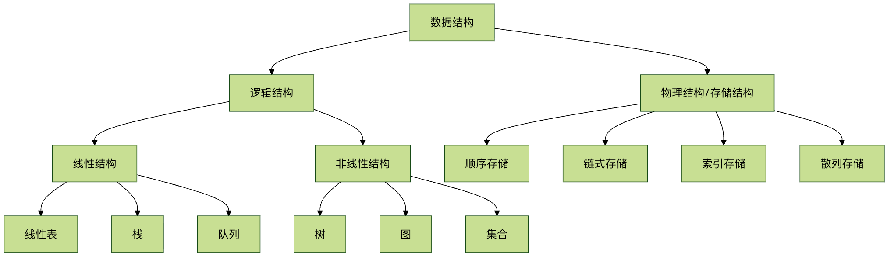

Introduction to Data Structures and Algorithms
In computer science, data structures and algorithms are the core foundation for building efficient and reliable software. They are the toolbox for programmers to solve complex problems, determining the program's running speed and resource consumption.
Imagine you are organizing a cluttered bookshelf. If you just pile books randomly, finding a specific book would be very difficult. But if you sort them by the first letter of the title, or categorize them (such as fiction, history, science), the search efficiency would be greatly improved.Data StructuresJust like the method of organizing a bookshelf, it defines how data should be organized and stored. AndAlgorithmsis the specific step for finding, inserting, or deleting a book.
Data structures and algorithms are the foundational capabilities of computer science, used to solve two things: how data should be organized and how problems can be solved efficiently.
Data Structures
Study how data is organized in memory or storage, and how to access and modify it efficiently. The core goal is to reduce time and space costs.
Common types:
- Linear structures: arrays, linked lists, stacks, queues
- Nonlinear structures: trees, graphs, heaps, hash tables
Algorithms
Study the steps and strategies for solving problems; the essence is an abstraction of the computational process. There are only two evaluation criteria: time complexity and space complexity.
Common classifications:
- Basic algorithms: traversal, recursion, divide and conquer
- Sorting and searching: quicksort, merge sort, binary search
- Advanced strategies: greedy, dynamic programming, backtracking
Relationship
Data structures determine how data is stored, and algorithms determine how it is computed. For the same problem, different structures can make the algorithm complexity vastly different.
Data Structures
A data structure is a way for a computer to store and organize data.
A data structure aims to implement a collection of data elements with one or more specific relationships, as well as define a set of operations on these data.
Core Concepts
- Data: A collection of symbols that a computer can recognize, store, and process, such as numbers, characters, etc.
- Data Element: The basic unit of data, usually considered and processed as a whole in a program.
- Data item: The smallest indivisible unit that constitutes a data element and has independent meaning.
- Data Structures: A collection of data elements that have one or more specific relationships with each other.
Classification of data structures
Data structures are mainly divided into two major categories:Logical structureandPhysical structure。

Logical structureDescribes the abstract relationships between data elements, independent of how the computer implements them. It is mainly divided into:
- Linear structure: There is a "one-to-one" linear relationship between data elements. Such as arrays, linked lists, stacks, and queues.
- Nonlinear structure: There are "one-to-many" or "many-to-many" complex relationships between data elements. Such as trees, graphs, and sets.
Physical structure(Also called storage structure) describes the actual storage method of data in computer memory. It is mainly divided into:
- Sequential storage: Store logically adjacent elements in storage units that are also physically adjacent. Such as arrays.
- Linked storage: Does not require logically adjacent elements to be physically adjacent; the logical relationships between elements are represented through additional pointers. Such as linked lists.
Algorithms
An algorithm is a series of clear, finite instruction steps for solving a specific problem.
An effective algorithm should have the following five characteristics:
- Finiteness: The algorithm must terminate after executing a finite number of steps.
- Determinism: Every step of the algorithm must have a definite definition without ambiguity.
- Feasibility: Every step of the algorithm can be executed a finite number of times through already-implemented basic operations.
- Input: An algorithm has zero or more inputs.
- Output: An algorithm has one or more outputs, which are quantities with a specific relationship to the inputs.
Evaluation criteria for algorithms: time complexity and space complexity
How do we judge whether an algorithm is good or bad? Usually fromTimeandSpaceTwo dimensions to measure.
- Time complexity: Qualitatively describes the running time of the algorithm. It represents the growth trend of the algorithm's execution time as the problem size n increases. Usually expressed using Big O notation.
- Space complexity: Qualitatively describes the size of temporary storage space occupied by the algorithm during execution. Also expressed using Big O notation.
Comparison of common time complexities
The table below shows the trends of different time complexities as data scale grows:
| Complexity representation | Name | Example (n=10 vs n=1000) | Description |
|---|---|---|---|
| O(1) | Constant Order | 1 step vs 1 step | Highest efficiency, independent of problem size |
| O(log n) | Logarithmic Order | ~3 steps vs ~10 steps | Very high efficiency, such as binary search |
| O(n) | Linear Order | 10 steps vs 1000 steps | Good efficiency, such as traversing an array |
| O(n log n) | Linearithmic Order | ~30 steps vs ~10000 steps | Fairly good efficiency, such as quicksort |
| O(n²) | Quadratic Order | 100 steps vs 1,000,000 steps | Lower efficiency, such as simple selection sort |
| O(2ⁿ) | Exponential Order | 1024 steps vs astronomical numbers | Extremely low efficiency, should be avoided as much as possible |
Simple understanding: What we pursue are algorithms whose time consumption grows more slowly as the data size n increases. O(1) and O(log n) are excellent, O(n) is acceptable, and O(n²) and above need optimization when dealing with large data sizes.
Classic data structure and algorithm examples
Let us experience the application of data structures and algorithms through a specific problem.
Problem: In an unordered list of numbers, quickly find whether a target number exists.
Solution 1: Linear search (using arrays)
This is an intuitive but inefficient method.
- Data Structures: Array (a linear list with sequential storage).
- Algorithms: Starting from the first element, compare it with the target value one by one until it is found or all elements have been traversed.
- Time complexity: O(n). In the worst case, all n elements need to be checked.
Example
def linear_search(arr, target):
"""
Linearly search for target value target in array arr.
Parameters:
arr: the list to search
target: the target value to find
Returns:
If found, return its index; otherwise return -1.
"""
for i in range(len(arr)): # Iterate through each element of the array
if arr[i] == target: # If the current element equals the target value
return i # Return the current index
return -1 # After traversal, if not found, return -1
# Test data
test_data = [12, 45, 67, 89, 34, 23, 90, 11]
target_number = 34
# Perform the search
result = linear_search(test_data, target_number)
# Output the result
if result != -1:
print(f"The index of target number {target_number} in the array is: {result}")
else:
print(f"Target number {target_number} not found in the array.")
Output result:
目标数字 34 在数组中的索引是：4
Solution 2: Binary search (using a sorted array)
This is an efficient method, but the prerequisite is that the data must be sorted.
- Data Structures: Ordered array.
- Algorithms：
- Compare the target value with the middle element of the array.
- If equal, it is found.
- If the target value is smaller, repeat step 1 in the left half of the array.
- If the target value is larger, repeat step 1 in the right half of the array.
- If the search interval is empty, it is not found.
- Time complexity: O(log n). Each comparison reduces the search range by half.
Example
def binary_search(sorted_arr, target):
"""
Binary search for target value target in the sorted array sorted_arr.
Parameters:
sorted_arr: sorted list (ascending)
target: the target value to find
Returns:
If found, return its index; otherwise return -1.
"""
left, right = 0, len(sorted_arr) - 1 # Initialize the search range to the entire array
while left <= right: # Continue searching while the range is valid
mid = (left + right) // 2 # Calculate the middle index
if sorted_arr[mid] == target: # Target value found
return mid
elif sorted_arr[mid] < target: # Target value is in the right half
left = mid + 1
else: # Target value is in the left half
right = mid - 1
return -1 # Range invalid, not found
# Test data (must be sorted)
test_data = [12, 45, 67, 89, 34, 23, 90, 11]
sorted_test_data = sorted(test_data) # Sort the test data
print(fSorted array: {sorted_test_data})
target_number = 34
# Perform the search
result = binary_search(sorted_test_data, target_number)
# Output the result
if result != -1:
print(fIndex of target number {target_number} in the sorted array: {result})
else:
print(fTarget number {target_number} not found in the sorted array)
Output result:
有序数组：[11, 12, 23, 34, 45, 67, 89, 90] 目标数字 34 在有序数组中的索引是：3
Comparison and Thinking：
- When
n=1000, linear search requires at most 1000 comparisons, while binary search requires at most only about 10 comparisons (because 2^10 ≈ 1024). - Binary search is far more efficient than linear search, but it requires the data to be pre-sorted. Sorting itself incurs a cost, so which algorithm to choose depends on the specific scenario (for example, whether the data is static with frequent searches, or dynamic with frequent insertions).
How to start learning?
Learning data structures and algorithms is a gradual process. It is recommended to follow this path:
- Master a programming language: First you need a tool to implement your ideas. Python, Java, or C++ are all good choices. Python has concise syntax and is more suitable for beginners to focus on the algorithm logic itself.
- Start with basic data structures：
- Array / List: The most basic and commonly used sequential storage structure.
- Linked list: The key to understanding pointers/references and dynamic memory allocation.
- Stack and Queue: Understand the operation-restricted linear lists of "last in, first out" and "first in, first out."
- Learn basic algorithm concepts：
- Sorting Algorithms: Bubble sort, selection sort, insertion sort (understand O(n²)), then learn merge sort and quicksort (understand O(n log n) and the divide-and-conquer idea).
- Search Algorithms: Sequential search, binary search.
- Challenge nonlinear structures：
- Tree: Focus on binary trees, especially binary search trees. Understand tree traversal (preorder, inorder, postorder).
- Graph: Understand graph representation methods (adjacency matrix, adjacency list) and basic traversal algorithms (depth-first search DFS, breadth-first search BFS).
- Practice and Problem Solving: Practice starting with simple problems on platforms such as LeetCode and Niuke.com to apply theory to practice. This is the best way to consolidate knowledge and exercise your thinking.